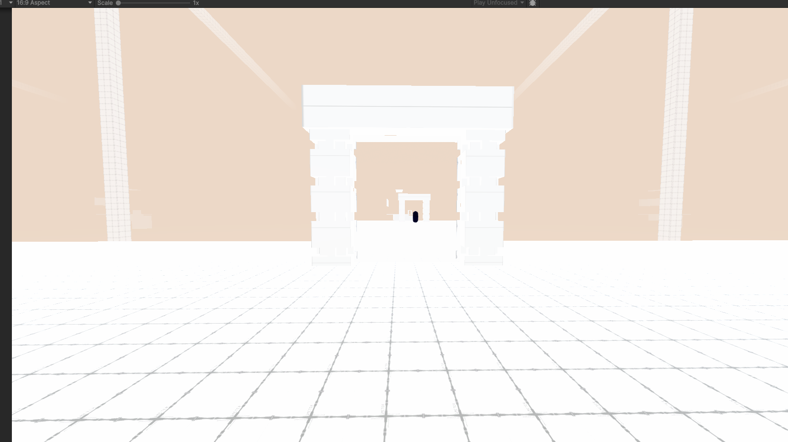
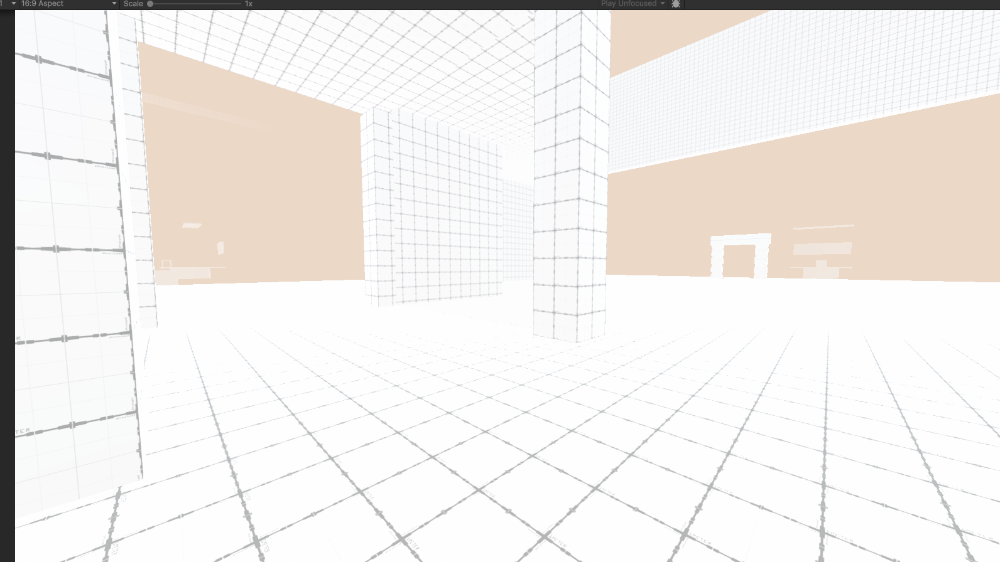
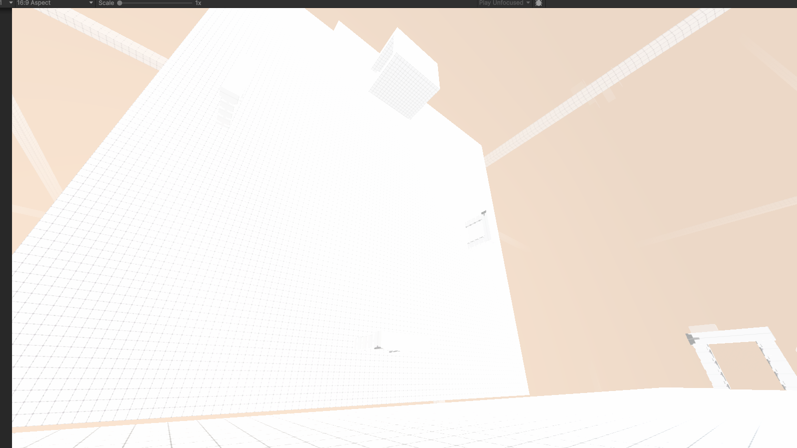
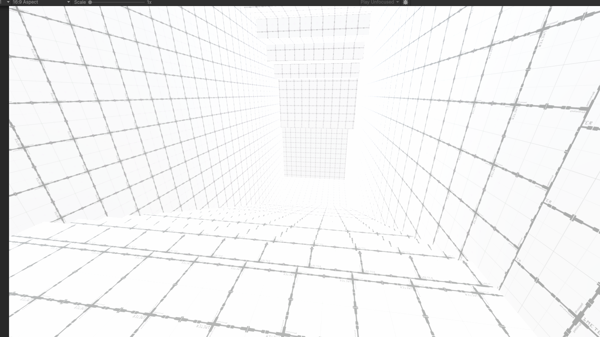
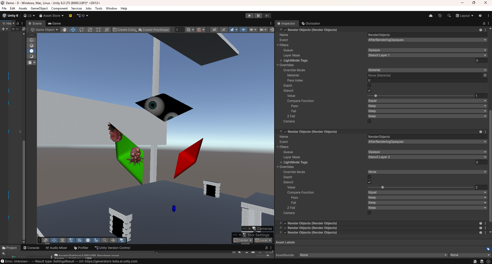
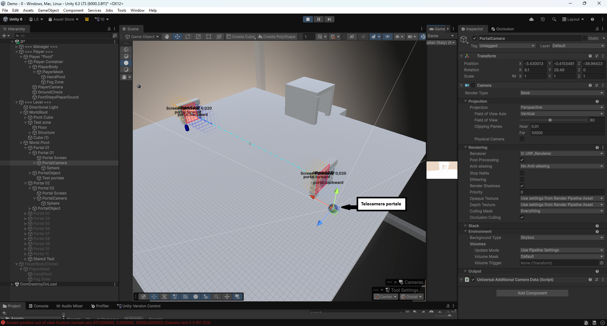

THESIS / UNITY / RESEARCH & PROTOTYPING
Study and practical implementation of non-Euclidean spaces in video games

Overview
Prototype
Technical challenges
Prototype in motion
Development images





Result